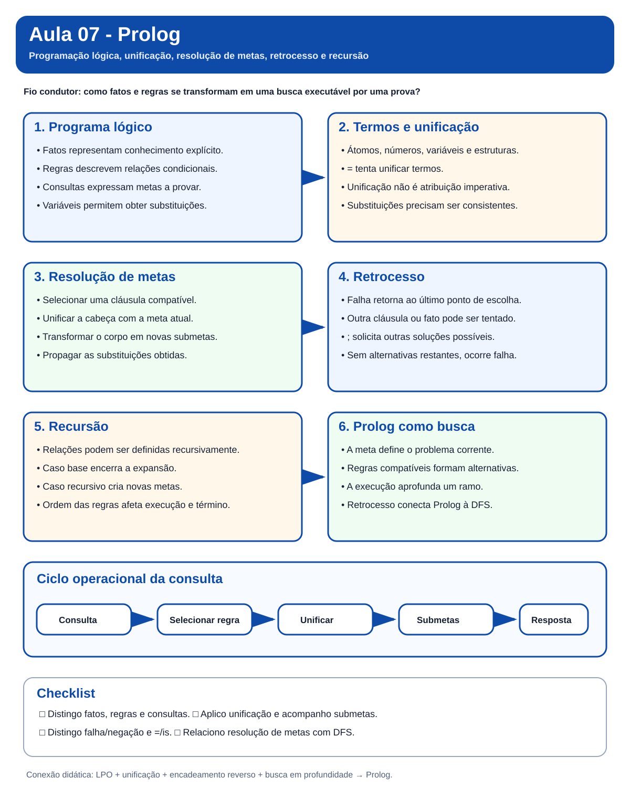

Aula 07 - Prolog
Guia visual de revisão. Esta nota fecha o bloco iniciado com Lógica Proposicional e Lógica de Primeira Ordem. O foco agora é compreender como fatos, regras, unificação, busca e retrocesso formam o modelo de execução de um programa Prolog.
Nota visual da aula

Visão em 30 segundos
| Pergunta | Ideia-chave |
|---|---|
| O que é Prolog? | Uma linguagem de programação lógica baseada em fatos, regras e consultas. |
| O que um programa descreve? | Relações que devem ser verdadeiras, em vez de uma sequência imperativa de comandos. |
| Como uma consulta é respondida? | Por busca de uma prova usando seleção de cláusulas, unificação e retrocesso. |
| O que faz a unificação? | Compatibiliza a meta atual com fatos ou cabeças de regras. |
| O que faz o retrocesso? | Retorna ao último ponto de escolha quando uma alternativa falha ou outra solução é solicitada. |
| Onde aparece busca? | A resolução de metas pode ser vista como exploração em profundidade de uma árvore de prova. |
Mapa mental
mindmap
root((Prolog))
Programa
Fatos
Regras
Consultas
Variáveis
Execução
Meta
Unificação
Submetas
Retrocesso
Controle
Ordem das cláusulas
Ordem das metas
Recursão
Conexões
LPO
Encadeamento reverso
Busca em profundidade
Complementos
Aritmética
Estruturas
Listas
1. Pergunta central
O que muda quando fatos, regras e mecanismos de inferência passam a constituir um programa executável?
Na Aula 06, unificação e encadeamento reverso eram mecanismos de inferência. Em Prolog, eles passam a fazer parte do próprio modelo operacional da linguagem.
2. Programação declarativa
Em uma linguagem imperativa, normalmente descrevemos como executar operações. Em Prolog, descrevemos relações por meio de fatos e regras e formulamos consultas que o mecanismo de execução tenta provar.
base de conhecimento (fatos + regras)
+
consulta
↓
unificação
↓
busca por uma prova
↓
resposta
3. Fatos, regras e consultas
Fato:
progenitor(ana, bruno).
Regra:
avo(X, Z) :-
progenitor(X, Y),
progenitor(Y, Z).
Consulta:
?- progenitor(bruno, X).
Uma variável transforma a consulta em uma busca por substituições que tornam a meta verdadeira.
4. Termos e variáveis
| Tipo | Exemplo |
|---|---|
| átomo | ana, azul, no_centro |
| número | 3, 4.5 |
| variável | X, Pessoa, Resultado |
| termo composto | ponto(2,4), progenitor(ana,bruno) |
Variáveis começam com letra maiúscula ou sublinhado. Átomos normalmente começam com letra minúscula.
5. Unificação em Prolog
O operador = tenta unificar termos; ele não representa atribuição imperativa.
?- pessoa(X, 20) = pessoa(carla, Idade).
X = carla,
Idade = 20.
A unificação exige compatibilidade estrutural e consistência das substituições.
6. Consultas, múltiplas soluções e retrocesso
Com fatos como progenitor(bruno, clara). e progenitor(bruno, diego)., a consulta ?- progenitor(bruno, X). pode retornar duas substituições. O ponto e vírgula solicita outra solução e o Prolog retrocede ao último ponto de escolha.
7. Regras e submetas
Uma regra pode decompor uma meta em outras metas. Para provar avo(bruno, eva), por exemplo, o sistema precisa satisfazer as duas chamadas a progenitor/2 com substituições consistentes.
8. Como Prolog tenta provar uma meta
flowchart TD
Q[Consulta ou meta] --> C[Selecionar cláusula compatível]
C --> U[Unificar]
U --> S[Gerar submetas]
S --> P{Todas as submetas foram provadas?}
P -->|sim| R[Retornar substituição ou sucesso]
P -->|não| B[Retroceder ao último ponto de escolha]
B --> C
9. Recursão
Relações transitivas podem ser expressas recursivamente:
maior_que(X, Y) :- maior(X, Y).
maior_que(X, Y) :- maior(X, Z), maior_que(Z, Y).
A segunda regra permite construir cadeias de relações intermediárias.
10. Prolog e busca em profundidade
A execução pode ser interpretada como uma árvore de prova: regras compatíveis geram alternativas, o corpo gera submetas, o sistema aprofunda uma alternativa e, em caso de falha, retorna ao último ponto de escolha. Essa estrutura conecta Prolog à Busca em Profundidade (DFS).
11. Ordem importa
Mesmo em uma linguagem declarativa, a execução possui uma leitura operacional. A ordem das cláusulas e a ordem das metas podem alterar desempenho, ordem das respostas e término.
12. Falha, desigualdade e negação por falha
Quando uma consulta falha, o Prolog informa que não encontrou uma prova com o programa disponível. Isso não equivale automaticamente a demonstrar a negação clássica da consulta.
O operador \+ implementa negação como falha (negation as failure):
sem_filho(X) :- pessoa(X), \+ tem_filho(X).
A meta \+ G tem sucesso quando G não pode ser provada no contexto corrente.
Já X \= Y tem sucesso quando os termos não podem ser unificados. Esse operador aparece, por exemplo, ao formalizar irmãos distintos:
irmaos(X,Y) :-
progenitor(P,X),
progenitor(P,Y),
X \= Y.
Cuidado:
\+é um mecanismo operacional e não deve ser confundido com a negação clássica da LPO.
13. Aritmética, identidade e comparação numérica
Prolog distingue operações que parecem semelhantes:
X = 1 + 2. % unifica X com o termo 1+2
X is 1 + 2. % avalia a expressão e produz X = 3
1 + 2 == 1 + 2. % testa identidade de termos
1 + 2 =:= 3. % avalia e compara valores numéricos
Portanto:
=tenta unificar;isavalia a expressão aritmética à direita;==testa identidade entre termos sem instanciar variáveis;=:=compara valores numéricos após avaliação.
14. Estruturas e listas
Termos compostos permitem representar dados estruturados, como ponto(3,4) ou data(22,setembro,2026).
Listas são estruturas recursivas:
[]
[a,b,c]
[Cabeca|Cauda]
Essa decomposição permite definições como:
pertence(X,[X|_]).
pertence(X,[_|Cauda]) :-
pertence(X,Cauda).
Também aparecem no material complementar ultimo/2, tamanho/2 e concatena/3, reforçando a ligação entre recursão, unificação e processamento de listas.
15. Conexões com as aulas anteriores
flowchart LR
A5[Aula 05: lógica e conhecimento] --> A6[Aula 06: LPO e inferência]
A6 --> U[Unificação]
A6 --> BC[Encadeamento reverso]
U --> A7[Aula 07: Prolog]
BC --> A7
A4[Aula 04: DFS] --> A7
16. Erros conceituais frequentes
Erro 1:
=é atribuição. Não. Em Prolog, o operador tenta unificar termos.Erro 2:
falsesignifica que a afirmação é impossível no mundo real. Não. Significa que a meta não pôde ser provada com o programa corrente.Erro 3: a ordem nunca importa em uma linguagem declarativa. A leitura declarativa descreve relações, mas a execução possui uma ordem operacional.
Erro 4: retrocesso e recursão são a mesma coisa. Não. Recursão define uma relação em termos dela mesma; retrocesso explora alternativas.
Erro 5:
falseprova a negação clássica da consulta. Não. Indica que o mecanismo não encontrou uma prova com o programa disponível.Erro 6:
=,is,==e=:=são equivalentes. Não. Eles realizam operações diferentes sobre termos e expressões numéricas.
Revisão de 1 minuto
Prolog
├── conhecimento: fatos e regras
├── consulta: meta e variáveis
├── execução: unificação, submetas, DFS e retrocesso
└── programação: recursão, aritmética, estruturas e listas
Checklist
- [ ] Diferencio fatos, regras e consultas.
- [ ] Identifico átomos, variáveis e termos compostos.
- [ ] Entendo
=como unificação. - [ ] Consigo prever respostas de consultas simples.
- [ ] Entendo o papel do ponto e vírgula e do retrocesso.
- [ ] Explico como uma regra transforma uma meta em submetas.
- [ ] Relaciono Prolog com encadeamento reverso.
- [ ] Relaciono a execução de Prolog com DFS.
- [ ] Reconheço o papel da recursão.
- [ ] Diferencio falha operacional de falsidade clássica.
- [ ] Entendo negação por falha com
\+. - [ ] Sei quando usar
\=. - [ ] Diferencio
=,is,==e=:=. - [ ] Interpreto listas por cabeça e cauda.
- [ ] Entendo por que a ordem das cláusulas e metas pode afetar a execução e o término.
Próximo passo: faça o Estudo Guiado 07, explore a visualização de resolução de metas e resolva as questões de Prolog da Lista 05.